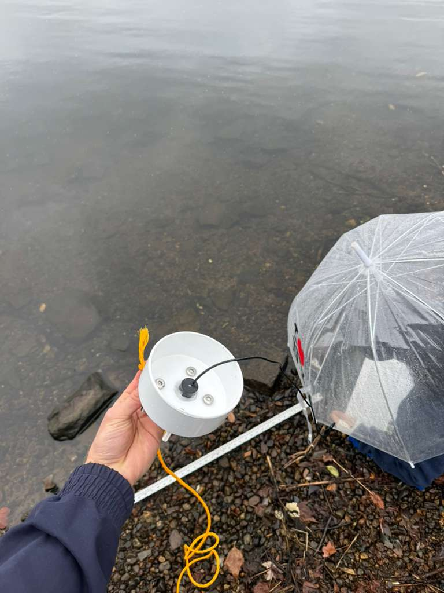
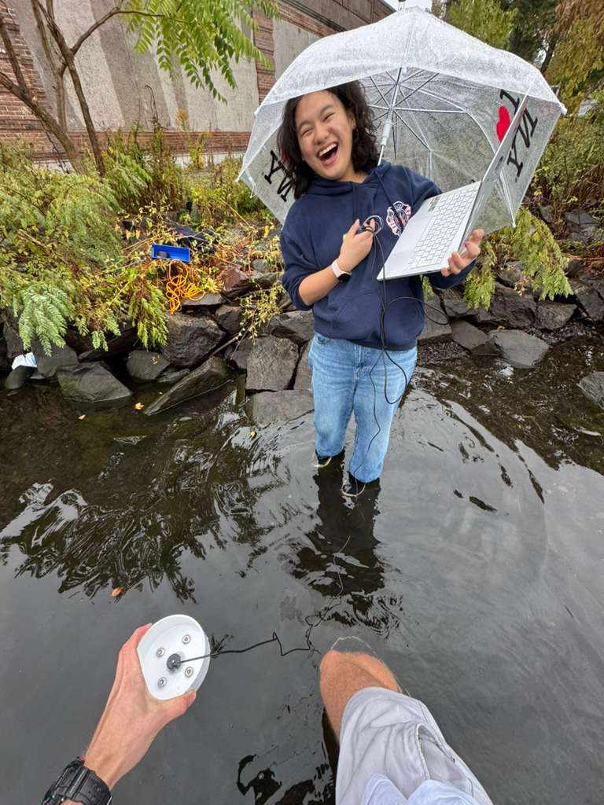
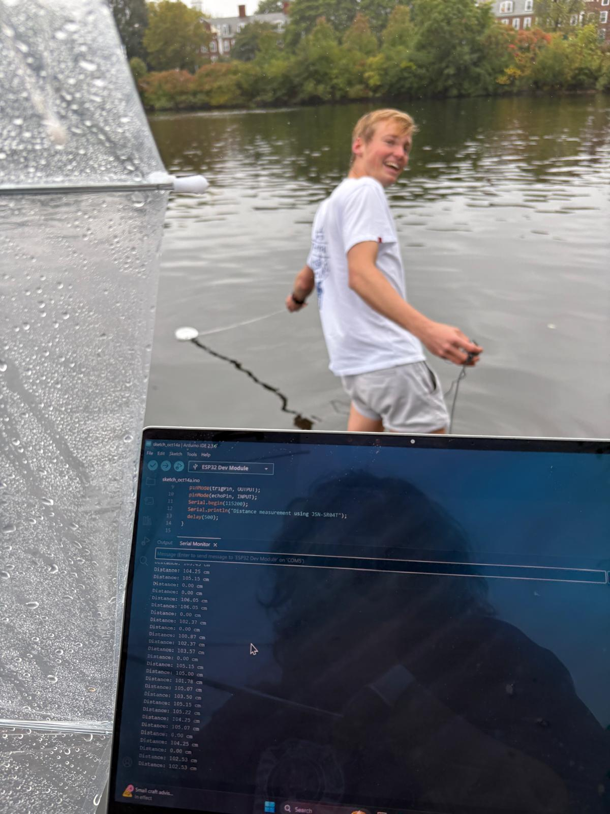

This section will display weekly progress updates from each team as development advances.
Week 3 Team Updates
Buoyancy test complete. Considering alternative material for perpendicular stabilizer (more environmentally
friendly). Drilled four stainless steel screws into bottom. Drilled JSN-SR04T sensor hole using 7/8th spade bit
for tight seal. Temporarily hot glued JSN-SR04T sensor into hole for seal. Set up sensor with arduino and tested
in water tub.
Week 4 Team Updates
Communications: Pushed basic code to code/esp32 folder and established packet structure.
Researched data storage methods, current thinking SD Card -> OSS InfluxDB.
Week 5 Team Updates
Depth Sensing: Went down to the Charles. Tested the depth sensor off the bank. Had to get quite far in and went for a swim.
Found that needed to be greater than 1m in order to accurately measure and not give minimum values of around 1m.
But success overall! No problem with the measuring cone. Additionally, the code we used is uploaded in the code>esp32 pathway of the github.
Week 6 Team Updates
Enclosure: Cut PVC pipes with different lengths to accurate flatness to prevent any water inflow in the future;
brainstormed on anchoring and additional buoyancy constraints. Cork material didn't work; will test out various lengths
with styrofoam and with our inflatable buoy in the coming week.

Shore test photo 1

Shore test photo 2

Shore test photo 3
Test video
Enclosure team:
Enclosure team thought about alternative material to use for stabilizing effect on PVC sensor enclosure.
Created sketch looking at Forces to consider. Thought about anchor attachment as well (included in diagram).
Sensing team:
We obtained potassium nitrate from Duda Energy in order to create nitrate solutions for testing. We created a 100 pm nitrate solution and then diluted it to also make a 50 ppm solution. The test strips instructions were to submerge the test strip in the solution for two seconds, take it out of the water, and let the color develop while leaving the strip level. However, in a sensor, it will be difficult to take a test strip out of the water so we want to develop a methodology that will allow us to get measurements from the strip while it is still submerged. By leaving a test strip submerged for 30 seconds, we got a reading between 25-50 ppm in comparison to the control for which we took the test strip out of the water was 50-100ppm. Further research is needed as to whether letting the test strip remain submerged for longer will give us readings closer to the real concentration and if the test strip gives a lower reading at a consistent difference or ratio.
Additionally, we created four groups to test the API Nitrate Test Kit. (1) No shaking for both the test solution and sample (2) No shaking the test solution but shaking the sample (3) Shaking the test solution and not shaking the sample (4) Shaking both the test solution and sample according to the test kit instructions.
After letting the test solution settle for 1 week, we performed the test for groups (1) and (2) which resulted in similar results despite the addition of shaking the sample for (2). Then, we shook the test solution and performed the tests for (3) and (4). (1) and (2) both had a yellow color that reflected a 0-5.0 ppm concentration of nitrates which we hypothesized may be due to the lack of shaking. (3) showed a red-orange color with darker colors concentrated in the middle of the test tube. (4) was uniformly red and had an accurate reading. Taking these tests together, we concluded that shaking the test solution is important to the test and we may be able to introduce vibrating components to the sensor which allow us to shake the test solution.